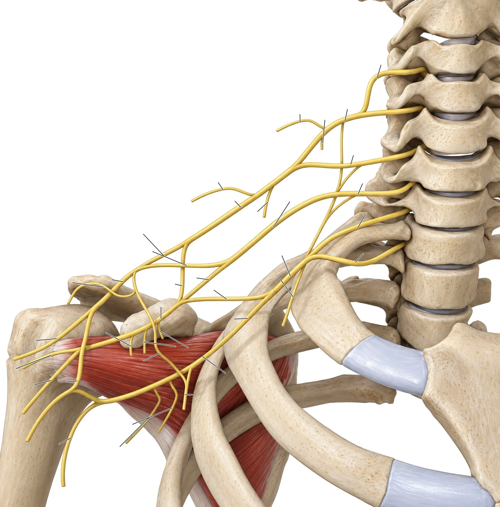

Pick a quiz from the menu.
Brachial plexus (anterior)Right neck and shoulder, anterior view (clavicle removed)

Gray tags mark the vertebrae.
Structures in this quiz
- C5 root
- C6 root
- C7 root
- C8 root
- T1 root
- C4 contribution
- Superior trunk
- Middle trunk
- Inferior trunk
- Anterior division of superior trunk
- Posterior division of superior trunk
- Anterior division of middle trunk
- Posterior division of middle trunk
- Anterior division of inferior trunk
- Posterior division of inferior trunk
- Lateral cord
- Posterior cord
- Medial cord
- Musculocutaneous nerve
- Axillary nerve
- Radial nerve
- Median nerve
- Ulnar nerve
- Dorsal scapular nerve
- Long thoracic nerve
- Branch to phrenic nerve
- Suprascapular nerve
- Nerve to subclavius
- Lateral pectoral nerve
- Medial pectoral nerve
- Ansa pectoralis
- Upper subscapular nerve
- Thoracodorsal nerve
- Lower subscapular nerve
- Medial brachial cutaneous nerve
- Medial antebrachial cutaneous nerve
- Lateral root of median nerve
- Medial root of median nerve
Study notes
C5 root
- Arises from
- Anterior ramus of the fifth cervical spinal nerve.
- Course
- Emerges between the anterior and middle scalene muscles and joins the C6 root to form the superior trunk.
- Supplies
- Gives off the dorsal scapular nerve and sends branches to the long thoracic nerve and the phrenic nerve.
C6 root
- Arises from
- Anterior ramus of the sixth cervical spinal nerve.
- Course
- Emerges between the anterior and middle scalene muscles and joins the C5 root to form the superior trunk.
- Supplies
- Sends a branch to the long thoracic nerve.
C7 root
- Arises from
- Anterior ramus of the seventh cervical spinal nerve.
- Course
- Emerges between the anterior and middle scalene muscles and continues alone as the middle trunk.
- Supplies
- Sends a branch to the long thoracic nerve.
C8 root
- Arises from
- Anterior ramus of the eighth cervical spinal nerve, which leaves the spine below the C7 vertebra.
- Course
- Joins the T1 root above the first rib to form the inferior trunk.
- Supplies
- Through the inferior trunk, mainly the ulnar nerve and the medial root of the median nerve.
T1 root
- Arises from
- Anterior ramus of the first thoracic spinal nerve.
- Course
- Passes up over the neck of the first rib and joins the C8 root to form the inferior trunk.
- Supplies
- Through the inferior trunk, mainly the small muscles of the hand.
C4 contribution
- Arises from
- Anterior ramus of the fourth cervical spinal nerve.
- Course
- A small branch that runs down to join the C5 root. It is a common variation, not a fixed part of the plexus: many people have it and many do not, and the brachial plexus is complete without it.
- Supplies
- When present it adds fibers to the upper part of the plexus. A plexus with a large share from C4 is called prefixed. C4 is also the main root of the phrenic nerve.
Superior trunk
- Arises from
- Union of the C5 and C6 roots.
- Course
- Runs laterally in the posterior triangle of the neck, above the clavicle, and splits into an anterior and a posterior division.
- Supplies
- Gives off the suprascapular nerve and the nerve to subclavius.
High yield
- When the head is forced away from the shoulder, as in a difficult delivery or a fall on the shoulder, the superior trunk is stretched or torn (Erb palsy). The arm hangs adducted and medially rotated with the elbow extended and the forearm pronated (waiter's tip).
Middle trunk
- Arises from
- Continuation of the C7 root.
- Course
- Runs laterally between the superior and inferior trunks and splits into an anterior and a posterior division.
- Supplies
- It has no branches of its own.
Inferior trunk
- Arises from
- Union of the C8 and T1 roots.
- Course
- Lies on the first rib behind the subclavian artery and splits into an anterior and a posterior division.
- Supplies
- It has no branches of its own.
High yield
- A sudden upward pull on the arm, as in grabbing a branch during a fall or traction on the arm during delivery, injures the inferior trunk (Klumpke palsy). The small muscles of the hand are paralyzed and the hand becomes clawed.
- The trunk can be compressed over a cervical rib or by a tumor at the apex of the lung (Pancoast tumor). Such a tumor often also causes Horner syndrome (drooping eyelid, small pupil, no sweating on that side of the face) by involving the sympathetic chain.
Anterior division of superior trunk
- Arises from
- Superior trunk, behind the clavicle.
- Course
- Joins the anterior division of the middle trunk to form the lateral cord.
- Supplies
- Carries fibers for the flexor muscles on the front of the limb.
Posterior division of superior trunk
- Arises from
- Superior trunk, behind the clavicle.
- Course
- Joins the posterior divisions of the middle and inferior trunks to form the posterior cord.
- Supplies
- Carries fibers for the extensor muscles on the back of the limb.
Anterior division of middle trunk
- Arises from
- Middle trunk, behind the clavicle.
- Course
- Joins the anterior division of the superior trunk to form the lateral cord.
- Supplies
- Carries fibers for the flexor muscles on the front of the limb.
Posterior division of middle trunk
- Arises from
- Middle trunk, behind the clavicle.
- Course
- Joins the posterior divisions of the superior and inferior trunks to form the posterior cord.
- Supplies
- Carries fibers for the extensor muscles on the back of the limb.
Anterior division of inferior trunk
- Arises from
- Inferior trunk, behind the clavicle.
- Course
- Continues alone as the medial cord.
- Supplies
- Carries fibers for the flexor muscles on the front of the limb.
Posterior division of inferior trunk
- Arises from
- Inferior trunk, behind the clavicle.
- Course
- Joins the posterior divisions of the superior and middle trunks to form the posterior cord.
- Supplies
- Carries fibers for the extensor muscles on the back of the limb.
Lateral cord
- Arises from
- Anterior divisions of the superior and middle trunks (C5 to C7).
- Course
- Lies lateral to the second part of the axillary artery.
- Supplies
- Gives off the lateral pectoral nerve, then ends as the musculocutaneous nerve and the lateral root of the median nerve.
Posterior cord
- Arises from
- Posterior divisions of all three trunks (C5 to T1).
- Course
- Lies behind the second part of the axillary artery.
- Supplies
- Gives off the upper subscapular, thoracodorsal, and lower subscapular nerves, then ends as the axillary nerve and the radial nerve.
Medial cord
- Arises from
- Anterior division of the inferior trunk (C8, T1).
- Course
- Lies medial to the second part of the axillary artery.
- Supplies
- Gives off the medial pectoral nerve and the medial cutaneous nerves of the arm and forearm, then ends as the ulnar nerve and the medial root of the median nerve.
Musculocutaneous nerve
- Arises from
- Lateral cord (C5 to C7).
- Course
- Pierces coracobrachialis, runs down between biceps brachii and brachialis, and continues as the lateral cutaneous nerve of the forearm.
- Supplies
- Coracobrachialis, biceps brachii, and brachialis, as well as the skin of the lateral side of the forearm.
High yield
- Injury weakens flexion of the elbow and supination of the forearm and numbs the lateral side of the forearm.
Axillary nerve
- Arises from
- Posterior cord (C5, C6).
- Course
- Passes backward through the quadrangular space with the posterior circumflex humeral artery and winds around the surgical neck of the humerus.
- Supplies
- Deltoid and teres minor, as well as the skin over the lower part of deltoid.
High yield
- Injured by a fracture of the surgical neck of the humerus or an anterior dislocation of the shoulder. Abduction of the arm is weak and a patch of skin over deltoid is numb.
Radial nerve
- Arises from
- Posterior cord (C5 to T1).
- Course
- Leaves the axilla behind the humerus, runs in the radial groove with the deep artery of the arm, and passes in front of the lateral epicondyle into the forearm.
- Supplies
- Triceps brachii and the extensor muscles of the forearm, as well as the skin of the back of the arm and forearm and of the lateral part of the back of the hand.
High yield
- Injured by a fracture of the middle of the shaft of the humerus, or by pressure in the axilla (crutches) or against the arm (Saturday night palsy). The wrist cannot be extended (wrist drop).
Median nerve
- Arises from
- A lateral root from the lateral cord and a medial root from the medial cord, which join in front of the axillary artery (C6 to T1, often C5 as well).
- Course
- Runs down the arm with the brachial artery, enters the forearm between the two heads of pronator teres, and passes through the carpal tunnel into the hand.
- Supplies
- Most of the flexor muscles of the forearm, the thenar muscles, and the lateral two lumbricals, as well as the skin of the palmar side of the lateral three and a half digits.
High yield
- Compression in the carpal tunnel numbs the lateral three and a half digits and wastes the thenar muscles.
- With an injury above the elbow, as in a supracondylar fracture of the humerus, the index and middle fingers stay straight when the person tries to make a fist.
Ulnar nerve
- Arises from
- Medial cord (C8, T1).
- Course
- Runs down the medial side of the arm, passes behind the medial epicondyle of the humerus, and enters the hand through the ulnar canal, outside the carpal tunnel.
- Supplies
- Flexor carpi ulnaris, the medial half of flexor digitorum profundus, and most of the small muscles of the hand, as well as the skin of the medial one and a half digits.
High yield
- Injured behind the medial epicondyle or at the wrist, as with a fracture of the hook of the hamate. The ring and little fingers claw, the interossei waste, and the fingers cannot be spread or brought together.
Dorsal scapular nerve
- Arises from
- The C5 root of the brachial plexus.
- Course
- Pierces the middle scalene muscle and runs down deep to levator scapulae, along the medial border of the scapula.
- Supplies
- Rhomboid major and rhomboid minor, and often levator scapulae as well.
Long thoracic nerve
- Arises from
- C5, C6, and C7 roots.
- Course
- Descends behind the roots of the plexus and the axillary artery, on the outer surface of serratus anterior.
- Supplies
- Serratus anterior.
High yield
- It can be cut in surgery on the axilla, as when lymph nodes are removed with a breast. Serratus anterior is paralyzed, the medial border of the scapula lifts off the chest wall (winged scapula), and the arm cannot be raised above the horizontal.
Branch to phrenic nerve
- Arises from
- The C5 root of the brachial plexus.
- Course
- A small branch that joins the phrenic nerve on the front of the anterior scalene muscle.
- Supplies
- With the rest of the phrenic nerve, the diaphragm.
High yield
- The phrenic nerve comes from C3, C4, and C5 (mnemonic: C3, 4, 5 keeps the diaphragm alive).
Suprascapular nerve
- Arises from
- Superior trunk (C5, C6).
- Course
- Runs laterally and backward to the suprascapular notch and passes through it under the superior transverse scapular ligament. The suprascapular artery passes over the ligament.
- Supplies
- Supraspinatus, infraspinatus, and the shoulder joint.
Nerve to subclavius
- Arises from
- Superior trunk (C5, C6).
- Course
- Descends in front of the plexus and the subclavian artery to the back of subclavius.
- Supplies
- The subclavius muscle.
Lateral pectoral nerve
- Arises from
- Lateral cord (C5 to C7).
- Course
- Pierces the clavipectoral fascia to reach the deep surface of pectoralis major. A loop in front of the axillary artery joins it to the medial pectoral nerve.
- Supplies
- Pectoralis major.
Medial pectoral nerve
- Arises from
- Medial cord (C8, T1).
- Course
- Passes forward between the axillary artery and vein, pierces pectoralis minor, and enters pectoralis major. A loop in front of the axillary artery joins it to the lateral pectoral nerve.
- Supplies
- Pectoralis minor and the sternocostal part of pectoralis major.
Ansa pectoralis
- Arises from
- A communicating branch of the lateral pectoral nerve (lateral cord, C5 to C7) that joins the medial pectoral nerve (medial cord, C8, T1). It is a loop between the two nerves, not a separate nerve.
- Course
- Curves across the front of the axillary artery, deep to pectoralis major.
- Supplies
- Carries fibers between the two pectoral nerves. Through it, fibers from the lateral pectoral nerve reach pectoralis minor, which the medial pectoral nerve supplies.
Upper subscapular nerve
- Arises from
- Posterior cord (C5, C6).
- Course
- A short branch that runs down onto the front of subscapularis.
- Supplies
- Upper part of subscapularis.
Thoracodorsal nerve
- Arises from
- Posterior cord, between the two subscapular nerves (C6 to C8).
- Course
- Runs down the posterior wall of the axilla with the thoracodorsal artery.
- Supplies
- Latissimus dorsi.
Lower subscapular nerve
- Arises from
- Posterior cord (C5, C6).
- Course
- Runs down and laterally across subscapularis toward teres major.
- Supplies
- Lower part of subscapularis and teres major.
Medial brachial cutaneous nerve
- Arises from
- Medial cord (C8, T1).
- Course
- Runs down the medial side of the axillary and brachial veins. It often joins the intercostobrachial nerve.
- Supplies
- Skin of the medial side of the arm.
Medial antebrachial cutaneous nerve
- Arises from
- Medial cord (C8, T1).
- Course
- Starts between the axillary artery and vein, runs down the arm medial to the brachial artery, and pierces the deep fascia with the basilic vein.
- Supplies
- Skin of the medial side of the forearm.
Lateral root of median nerve
- Arises from
- Lateral cord of the brachial plexus, as one of its two terminal branches (the other is the musculocutaneous nerve). Its fibers come mainly from C6 and C7, often with some from C5.
- Course
- Runs down and medially in the axilla on the lateral side of the third part of the axillary artery. It joins the medial root in front of the artery, or just lateral to it, to form the median nerve.
- Supplies
- Gives no branches of its own. Its fibers continue in the median nerve and include most of the nerve's sensory fibers from the thumb, index, and middle fingers, and the motor fibers to pronator teres and flexor carpi radialis.
Medial root of median nerve
- Arises from
- Medial cord of the brachial plexus, as one of its two terminal branches (the other is the ulnar nerve). Its fibers come from C8 and T1.
- Course
- Crosses in front of the third part of the axillary artery, from medial to lateral, and joins the lateral root to form the median nerve.
- Supplies
- Gives no branches of its own. Its fibers continue in the median nerve and include the motor fibers to the thenar muscles and the lateral two lumbricals.